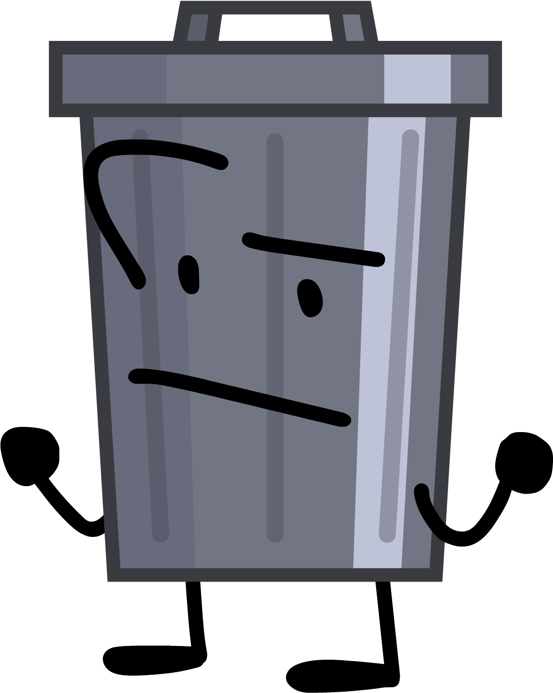
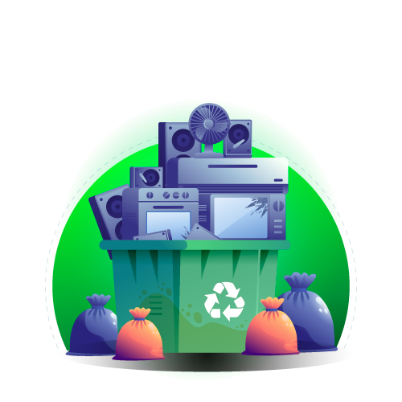
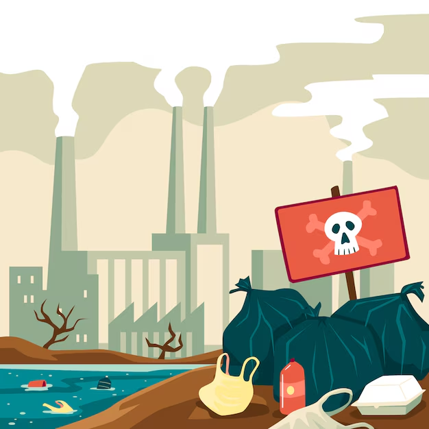

Indústria, Inovação e Infraestrutura
O descarte do lixo eletrônico e sua relação com a ODS 9.

O que são as ODS?
Os Objetivos de Desenvolvimento Sustentável (ODS) são 17 objetivos globais, estabelecidos como parte da Agenda 30, visando abordar desafios sociais, econômicos e ambientais que ocorrem no mundo todo. Cada um desses objetivos possui uma meta que deve ser alcançada até o ano de 2030.

ODS 9
O Objetivo de Desenvolvimento Sustentável 9 é intitulado como Indústria, Inovação e Infraestrutura se baseia na visão de impulsionar o progresso socioeconômico global e no Brasil. Esse objetivo enfrenta a relação entre os problemas climáticos e o crescimento industrial. Pois o crescimento industrial impulsiona o progresso, porém gera emissões de gases de efeito estufa e outros impactos ambientais, o que exige medidas para reduzir os danos e garantir sustentabilidade.
O Problema
O lixo eletrônico é composto por materiais de origem inorgânica, os quais podem afetar negativamente o meio ambiente, visto que são compostos por elementos poluentes, sendo absorvidos pelo solo e pelos lençois freáticos.
O contato com esses produtos, além de ser prejudicial ao ambiente, pode também comprometer a saúde de pessoas e animais que entrarem em contato, causando diversas doenças.
Dentre as substâncias tóxicas que se encontram nesses dispositivos, estão o chumbo, encontrado em baterias e soldas, o qual pode causar danos ao sistema nervoso. O mercúrio, presente em lâmpadas fluorescentes e circuitos eletrônicos, pode afetar o sistema nervoso e renal. O cádmio é encontrado em baterias recarregáveis, reconhecido como carcinogênico, podendo causar danos aos rins e pulmões. Também os bifenilos policlorados (PCBs) em equipamentos eletrônicos, são persistentes no meio ambiente, podendo causar impactos sérios à saúde e à fauna.
Alguns exemplos do que pode ser considerado lixo eletrônico são: Computadores, celulares, tablets, monitores, teclados, aparelhos de som, câmeras, etc.
O Brasil é o quinto maior produtor de lixo eletrônico no mundo, gerando em média 2,4 milhões de toneladas anuais. A melhor forma de reciclagem destes resíduos é desmontá-los, destinando cada parte para o local correto. Das inúmeras toneladas produzidas no país, apenas uma pequena parte é direcionada corretamente neste processo. Há uma lei no país que exige que os produtores recolham seus produtos


Causa
O aumento da globalização e da tecnologia faz com que os lançamentos sejam constantes, novos aparelhos são lançados em curtos períodos de tempo, induzindo as pessoas a abandonarem os seus antigos. Consequentemente, estes são descartados aos montes, gerando uma grande quantidade de lixo eletrônico.
Consequência
O contato com esses produtos, além de ser prejudicial ao ambiente, pode também comprometer a saúde de pessoas e animais que entrarem em contato, causando diversas doenças.
Dentre as substâncias tóxicas que se encontram nesses dispositivos, estão o chumbo, encontrado em baterias e soldas, o qual pode causar danos ao sistema nervoso. O mercúrio, presente em lâmpadas fluorescentes e circuitos eletrônicos, pode afetar o sistema nervoso e renal. O cádmio é encontrado em baterias recarregáveis, reconhecido como carcinogênico, podendo causar danos aos rins e pulmões. Também os bifenilos policlorados (PCBs) em equipamentos eletrônicos, são persistentes no meio ambiente, podendo causar impactos sérios à saúde e à fauna.

Solução
A forma mais eficaz de reduzir drasticamente a quantidade de lixo eletrônico é a reciclagem. Muitas empresas atualmente possuem seus próprios centros de reciclagem, onde reutilizam os aparelhos antigos para criar os novos. Por isso, elas recebem os aparelhos antigos de seus clientes, entregá-los às suas respectivas empresas é uma forma de descarte.
A gestão destes resíduos é regulamentada por lei, promovendo práticas sustentáveis. A Política Nacional de Resíduos Sólidos (Lei n.º 12.305/2010) estabelece as diretrizes necessárias.